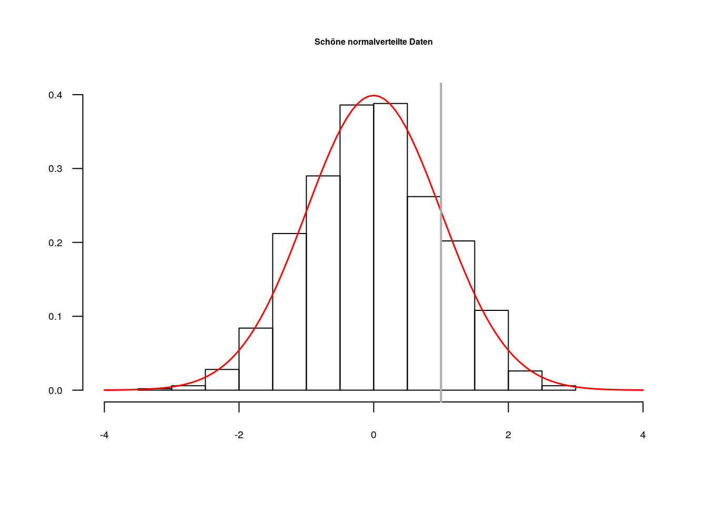

2 Vektoren
Die einfachste und wichtigste Datenstruktur von R ist der Vektor. Ein Vektor ist beispielsweise eine einzelne Zahl wie in den Taschenrechner-Berechnungen in Kapitel 1. So gilt für die Berechnung 1 + 3:
1ist ein Vektor3ein Vektor- das Ergebnis
4ist auch ein Vektor
Das Interessante an Vektoren ist, dass der ein-elementige Vektor nur ein Spezialfall ist. Im Normalfall können Vektoren mehrere Elemente enthalten; die „atomare“ Einheit in R ist also nicht ein einzelnes Element, sondern gleich eine Aneinanderreihung beliebig vieler4 gleichartiger Elemente, etwa Zahlen. Statistische Berechnungen – wie die Berechnung eines Mittelwerts oder einer Standardabweichung – lassen sich direkt auf einer Menge an Daten durchführen, da diese in einem Vektor gespeichert sind. Diese „Vektorbasiertheit“ ist vermutlich die größte Stärke von R für statistische Berechnungen.
Elemente zu Vektoren zusammenfügen (sprich: mehrere Vektoren zu einem Vektor zusammenfügen) funktioniert mit der Funktion c – die vermutlich basalste Funktion in R. Sie ist so simpel und grundlegend, dass man sie gegebenenfalls vergisst, wenn man sie braucht – versucht, sie zu erinnern!
## Füge mehrere Zahlen zu einem Vektor zusammen:
c(0.5, 1, 1.5) # Kommazahlen mit DezimalPUNKT schreiben[1] 0.5 1.0 1.5Man kann die Funktion c auch auf eine einzelne Zahl anwenden. Das ist dasselbe als würde man nur die Zahl eingeben:
c(1)[1] 1Folgendes geht auch, da c mehrere Vektoren zu einem einzelnen Vektor „verschmilzt“:
c(0.5, 1, 1.5, c(1, 2, 3))[1] 0.5 1.0 1.5 1.0 2.0 3.0Auf mehrelementigen Vektoren kann man statistische Berechnungen durchführen, wie etwa die Bestimmung des arithmetischen Mittels, einer Standardabweichung, der Varianz, oder des Minimums oder Maximums:5
## Berechne einen Mittelwert
mean(c(0.5, 1, 1.5))[1] 1## Berechne eine Standardabweichung
sd(c(0.5, 1, 1.5))[1] 0.5## Berechne eine Varianz:
var(c(0.5, 1, 1.5))[1] 0.25## Und jetzt noch einmal die Standardabweichung:
sqrt(var(c(0.5, 1, 1.5))) # was ist `sqrt`?[1] 0.5## Minimum:
min(c(0.5, 1, 1.5))[1] 0.5## Maximum:
max(c(0.5, 1, 1.5))[1] 1.5In diesem Code-Block haben wir implizit einen wichtigen Bestandteil von R kennengelernt: Funktionen. Für den Einstieg reicht es für uns, folgende Eigenschaften von Funktionen zu verstehen:
- Funktionen haben einen Namen – etwa:
meanoderc - Hinter dem Namen einer Funktion werden in Klammern ein oder mehrere Argumente übergeben, etwa: ein Vektor
- Wenn einer Funktion mehrere Argumente übergeben werden, werden diese mit Kommata separiert, etwa:
c(1, 2, 3) - Funktionen führen eine Berechnung durch und geben uns das Ergebnis zurück
Einfach gesagt nehmen also Funktionen Daten entgegen und geben wiederum Daten zurück. Der Großteil unserer Arbeit mit R ist die Anwendung von Funktionen. Es ist möglich Funktionsaufrufe zu verschachteln, wie dieses Beispiel zeigte:
sqrt(var(c(0.5, 1, 1.5)))Hier wertet die Funktion sqrt (die Wurzel; engl. square root) das Ergebnis der Funktion var aus, um eine Standardabweichnung zu bestimmen. Der Aufruf ist also äquivalent zu sqrt(0.25), da die Varianz von 0.5, 1, und 1.5 gleich 0.25 ist. Diese Beobachtung offenbart eine weitere wichtige Eigenschaft von R: Wir können unseren Code immer als das verstehen, was er ergibt, wenn er von R ausgewertet wird. Es macht keinen Unterschied, ob ich das Ergebnis einer Berechnung selber „händisch“ aufschreibe – also hier 0.25 –, oder Code schreibe, der mir dieses Ergebnis generiert – hier: var(c(0.5, 1, 1.5)).
Eine nützliche und oft verwendete Kurzform, um Vektoren aufsteigender, ganzer Zahlen zu erstellen ist folgende:
1:20 [1] 1 2 3 4 5 6 7 8 9 10 11 12 13 14 15 16 17 18 19 20So lässt sich beispielsweise sehr einfach die Summe aller Zahlen von 1 bis 1,000 berechnen:
sum(1:1000)[1] 500500Wir können auch absteigende Sequenzen erstellen:
5:-5 [1] 5 4 3 2 1 0 -1 -2 -3 -4 -5Diese Tabelle enthält einige nützliche Funktionen, die auf Vektoren anwendbar sind (in R-Jargon: sie nehmen einen Vektor als Argument an) und jeweils selber auch einen Vektor zurückgeben:
| Name | Funktionalität |
|---|---|
mean |
Berechnet den Mittelwert eines Vektors |
median |
Berechnet den Median eines Vektors |
sum |
Berechnet die Summe aller Elemente eines Vektors |
max |
Gibt den größten Wert eines Vektors zurück |
min |
Gibt den kleinsten Wert eines Vektors zurück |
length |
Gibt die Zahl der Elemente eines Vektors zurück |
sd |
Berechnet die Standardabweichung eines Vektors |
var |
Berechnet die Varianz eines Vektors |
sort |
Sortiert einen Vektor aufsteigend |
rev |
Kehrt die Reihenfolge der Elemente im Vektor um |
round |
Rundet die Elemente in einem Vektor |
sqrt |
Berechnet für jedes Element im Vektor die Quadratwurzel |
unique |
Gibt alle unterschiedlichen Werte eines Vektors aus |
Für die Funktionen in dieser Tabelle gilt, dass sie zwar alle einen Vektor zurückgeben, aber die Länge des Ausgabevektors unterschiedlich sein kann. Die Funktionen mean und sum ergeben etwa Vektoren der Länge 1, da sie genau einen Kennwert bestimmen. Die Funktionen sort, sqrt und round geben hingegen einen Vektor zurück, der aus genauso vielen Elementen besteht wie der Eingabevektor.
Auch basale mathematische Berechnungen werden gleich auf alle Elemente eines Vektors angewendet:
1:10 * 2 [1] 2 4 6 8 10 12 14 16 18 20(1:10 * 2) - 1 [1] 1 3 5 7 9 11 13 15 17 19Hierbei werden die Operationen * 2 bzw. -1 direkt auf alle Elemente der Vektoren 1:10 bzw. (1:10 * 2) angewendet; die Ausgabe ist jeweils ein Vektor der Länge 10. Bei gleich langen Vektoren werden solche Operationen im Allgemeinen komponentenweise:
2:4 * 4:6 # entspricht c(2*4, 3*5, 4*6)[1] 8 15 24Dieses Verhalten ist typisch für R: Viele Funktionen und Operationen in R arbeiten komponentenweise, wenn zwei Vektoren gleicher Länge übergeben werden. Das Element an Position 1 im einen Vektor wird dann mit dem Element an Position 1 im anderen Vektor gepaart, das Element an Position 2 im einen Vektor mit dem Element an Position 2 im anderen Vektor – und so weiter.
Werden ein ein-elementiger Vektor und ein mehr-elementiger Vektor mit einer Berechnung (etwa einer Addition) verknüpft, wird normalerweise das einzelne Element mit allen Elementen des anderen Vektors „gepaart“.6
2.1 Variablen
Wir wollen unsere Daten nicht nur in der Konsole ausgeben lassen, sondern auch abspeichern und damit arbeiten. Ein essentieller Bestandteil einer jeden Programmiersprache ist es, Daten in Variablen abzuspeichern. Variablen sind Namen, mit deren Hilfe wir auf gespeicherte Daten zugreifen. Wenn wir Daten in einer Variablen abgespeichert haben, können wir unter dem Namen der Variablen immer wieder darauf zugreifen. In R funktioniert das mit der Zuweisung <-.
## Speichert einen Vektor in einer Variablen:
meinVektor <- c(1, 2, 6, 7, 10)Ich kann den Inhalt von Variablen in der R-Konsole ausgeben lassen, wenn ich den Namen der Variablen in die Konsole schreibe und Enter drücke:
meinVektor[1] 1 2 6 7 10Ich kann Variablen in Berechnungen verwenden:
meinVektor * 2[1] 2 4 12 14 20Ich kann Funktionen auf Variablen anwenden und das Ergebnis der Funktion wiederum in einer Variablen speichern:
xx <- mean(meinVektor)
## "Zentrierter" numerischer Vektor:
meinVektor - xx[1] -4.2 -3.2 0.8 1.8 4.8Variablen können an jeder Stelle verwendet werden, an der man Daten sonst „händisch“ eingeben würde. Wir können jegliche Objekte – nicht nur Vektoren, sondern auch Datentabellen oder beliebig komplizierte Ergebnisse von Berechnungen – in Variablen speichern. Der Workflow in R ist so ausgelegt, dass Zwischenergebnisse weiterverwendet werden können. Hierbei unterscheidet es sich fundamental von SPSS, das einen Unterschied zwischen Daten und „Output“ macht. In R kann das Ergebnis jeglicher Berechnung als Input einer anderen Berechnung dienen.
Merke: In R kann (fast) alles in Variablen gespeichert und weiterverwendet werden.
Wir können auch mit einem Gleichzeichen = Daten zu Variablen zuweisen. Das funktioniert genauso wie mit <-:
foo = 1:2
foo[1] 1 2In R hat sich aus historischen Gründen die Konvention durchgesetzt, <- zu verwenden, die ich in diesem Skript auch befolgen werde. In vielen anderen Programmiersprachen werden Variablen mit Gleichzeichen zugewiesen.
2.1.1 Ausgabe versus Abspeichern
Wir haben jetzt zwei verschiedene Möglichkeiten kennengelernt, Objekte7 in R zu verwenden:
- Wir geben Objekte in der Konsole aus.
- Wir speichern Objekte in einer Variable ab.
Diese beiden Verwendungen sind fundamental unterschiedlich. Das mag erst einmal trivial erscheinen, aber ist im Einzelfall nicht unbedingt ersichtlich. Betrachten wir das folgende Beispiel:
bar <- c(3, 2, 6, 3, 9, 5, 7, -3)
sort(bar)[1] -3 2 3 3 5 6 7 9Die Funktion sort sortiert den numerischen Vektor bar aufsteigend. Wie sieht der Vektor bar nach der Operation aus? Es gibt zwei Möglichkeiten:
barenthält den sortierten Vektor, den ich mithilfe vonsort(bar)erstellt habebarenthält den unsortierten Vektor, den ich vor der Operationsort(bar)erstellt habe
Wir können die Frage leicht klären, indem wir bar in der Konsole ausgeben:
bar[1] 3 2 6 3 9 5 7 -3Offensichtlich hat sort(bar) den Vektor, der in der Variablen bar gespeichert ist, nicht geändert. Das ist eine fundamentale Eigenschaft der Programmiersprache R: Funktionen nehmen Daten an und sie geben Daten zurück – sie verändern aber nicht die eingegebenen Daten. Wenn wir wollen, dass bar die Zahlenfolge in sortierter Reihenfolge enthält, können wir die folgende Befehlkette verwenden:
bar <- c(3, 2, 6, 3, 9, 5, 7, -3)
bar <- sort(bar)In diesem Fall geht der Ursprungsvektor verloren und wir behalten nur den sortieren Vektor. Generell gilt: wenn wir Daten in der Konsole ausgeben lassen, verschwinden diese sozusagen im „Nirvana“. Wenn wir mit Daten weiterarbeiten wollen, müssen wir die Ausgabe einer Funktion in einer Variablen speichern. Beide Verwendungszwecke sind denkbar: Manchmal benötige ich nur die Ausgabe einer Berechnung, manchmal möchte ich das Ergebnis abspeichern.
2.1.2 Variablennamen
Generell bestehen Variablennamen aus Buchstaben und Zahlen und den Zeichen . und _. Folgende Einschränkungen sind zu beachten:
- Variablennamen dürfen keine Leerzeichen enthalten
bla bla <- c(1, 2)funktioniert nichtblabla <- c(1, 2)funktioniert
- Variablennamen dürfen nicht mit einer Zahl starten
1bla <- c(1, 2)funktioniert nichtbla1 <- c(1, 2)funktioniert
- Variablennamen dürfen keine Sonderzeichen außer
_oder.enthaltenbla-bla <- c(1, 2)funktioniert nichtbla%bla <- c(1, 2)funktioniert nichtbla_bla <- c(1, 2)funktioniertbla.bla <- c(1, 2)funktioniert
bla <- 1ist nicht das Gleiche wieBla <- 1oder garBLA <- 1- Vermeidet Umlaute in Variablennamen.
Rwird diese zwar akzeptieren, aber ich würde dennoch davon abraten, sie zu nutzen.
Eine fundamentale Schwierigkeit beim Programmieren ist das Finden guter Variablennamen; bla und blabla sind denkbar schlechte Variablennamen. Gute Variablennamen sprechen, d.h. sie machen eine Aussage darüber, was für Daten sie beinhalten.
## Schlechter Variablenname:
foo <- mean(age)
## Ggf. etwas besser:
mean_age <- mean(age)Beachtet immer folgende Regel: Variablennamen sollten nicht lügen, also verwendet niemals einen Namen der folgenden Art:
mean_age <- sd(age) # Niemals machen!Man ist schnell geneigt einen unsinnigen Variablennamen zu vergeben, um keine Zeit mit der Namensfindung zu verschwenden – man hat ja schließlich wichtigen Code zu schreiben! Man sollte sich jedoch so gut wie immer kurz Zeit nehmen, einen sinnigen Namen zu finden – das zukünftige Selbst wird es einem danken. Unsinnige Variablennamen sind in Ordnung, wenn man sich zu 100% sicher ist, dass man die Variable nach einmaliger Nutzung nicht mehr verwendet. Wenn man eine Variable nicht mehr benutzen möchte, kann man sie mit der rm Funktion löschen:
foo <- 1:10 # Wegwerfvariable
rm(foo)
foo
Fehler: Objekt 'foo' nicht gefundenWeiterhin ist es guter Stil konsistent in der Vergebung der Variablennamen zu sein. Variablennamen sollen einen semantischen Gehalt haben, das heißt sie machen eine Aussage darüber, welche Daten sie enthalten. Häufig ist diese Information nicht in einem Wort erklärbar. Um auszusagen, dass eine Variable „das mittlere Alter“ enthält, müssen mindestens die Anteile „mittel“ und „Alter“ enthalten sein. Wie soll das verknüpft werden? Verschiedene Konventionen existieren; wichtig ist, dass ihr euch konsistent für eine Variante entscheidet.8
## Mögliche Konventionen der Namensgebung von Variablen:
mean_age <- mean(age)
mean.age <- mean(age)
meanAge <- mean(age)
## keine gute Konvention:
meanage <- mean(age)2.2 Datentypen von Vektoren
In R hat jeder Vektor genau einen Datentyp. Bis jetzt haben wir nur mit dem Datentyp Zahl gearbeitet, der in R „numeric“ heißt. Der Datentyp eines Vektors bestimmt, was für Operationen wir damit durchführen können. Vektoren vom Typ numeric etwa kann man addieren, multiplizieren und so weiter. Mit der Funktion mode können wir überprüfen, welchen Datentyp ein Vektor hat:
mode(1:10)[1] "numeric"In diesem Abschnitt werden weitere Datentypen behandelt, die wir nutzen, um unterschiedliche Informationen darzustellen.
2.2.1 character
Der Datentyp für Text heißt character. Text wird mit doppelten oder einfachen Anführungszeichen angegeben:
"Hallo Welt!" # doppelte Anführungszeichen[1] "Hallo Welt!"mein_text <- 'bla bla bla' # einfache Anführungszeichen
## zwei-elementiger Vektor vom Typ character:
mein_text2 <- c("Cronbachs", "Alpha")Mit Texten können wir andere Operationen durchführen als mit Zahlen, etwa ergibt Folgendes eine Fehlermeldung9 und ergibt auch gar keinen Sinn, da man Text nicht mit einer Zahl multiplizieren kann:
"bla" * 2
Fehler in "bla" * 2 : nicht-numerisches Argument
für binären OperatorIn diesem Skript spielt Text keine allzu große Rolle. In erster Linie werden wir Vektoren vom Typ character für Datenzugriffe verwenden; im Speziellen werden wir sie einsetzen, um Spalten in Datentabellen zu adressieren (siehe Kapitel 3). Zu diesem Zweck werden wir die Funktion paste0 nutzen, die character-Vektoren beliebiger Länge erstellt. So lassen sich beispielsweise bequem 10 durchnummerierte Itemnamen generieren, wodurch man gleich 10 Spalten aus einer Tabelle auswählen könnte:
items <- paste0("item_", 1:10)Hierbei wird der Text “item_” mit den Zahlen von 1 bis 10 gepaart. Das Ergebnis des Befehls ist ein 10-elementiger Vektor, was wir auch wie folgt überprüfen können:
length(items)[1] 10items [1] "item_1" "item_2" "item_3" "item_4" "item_5" "item_6" "item_7"
[8] "item_8" "item_9" "item_10"Wenn man mit der Funktion paste0 mehrere ein-elementige Vektoren miteinander verknüpft, wird ein ein-elementiger Vektor vom Typ character ausgegeben:
paste0("item", "_", 1) # paste0 nimmt beliebig viele Argumente an[1] "item_1"2.2.2 logical
Es hat sich als nützlich erwiesen, einen Datentyp einzuführen, der “Wahrheit” kodiert. Dieser Datentyp wird in R “logical” genannt; er kennt nur die Ausprägungen TRUE und FALSE. Eine sonst gängige Bezeichnung für diesen Datentyp ist auch “boolean”.
wahr <- TRUE
falsch <- FALSEWir werden häufig vom Typ logical Gebrauch machen, wenn wir in Datentabellen Fälle auswählen (etwa alle weiblichen oder männlichen Teilnehmer in einer Umfrage).
Mit logischen Werten kann man die logischen Operationen UND (in R: & ), ODER (in R: | ) und NICHT (in R: ! ) durchführen:10
## Logisches UND
TRUE & TRUE[1] TRUETRUE & FALSE[1] FALSEFALSE & FALSE[1] FALSE## Logisches ODER
TRUE | TRUE[1] TRUETRUE | FALSE[1] TRUEFALSE | FALSE[1] FALSE## Logisches NICHT
!TRUE[1] FALSE!FALSE[1] TRUEAuch diese logischen Operationen arbeiten komponentenweise auf Vektoren, die mehr als ein Element enthalten:
c(TRUE, FALSE, FALSE) & c(TRUE, TRUE, FALSE)[1] TRUE FALSE FALSEc(TRUE, FALSE, FALSE) | c(TRUE, TRUE, FALSE)[1] TRUE TRUE FALSE2.2.3 factor
Vektoren vom Typ factor stellen kategoriale Variablen dar – etwa die unabhängigen Variablen in einer ANOVA. So können wir einen Vektor vom Typ factor erstellen:
laune <- c(1, 2, 3, 1, 2, 1)
laune_faktor <- factor(laune, levels = c(1, 2, 3),
labels = c(":(", ":)", ":D"))
laune_faktor[1] :( :) :D :( :) :(
Levels: :( :) :DDie Funktion factor wird hier genutzt, um numerische Werte in factor umzuwandeln. Dabei wurden levels spezifiziert, d.h. die Werte, die der ursprüngliche Vektor angenommen hat. Das Argument labels ordnet den levels eine Bezeichnung zu; diese wird uns angezeigt, wenn wir den Vektor aufrufen. Mit einem Vektor vom Typ factor kann ich keine numerischen Berechnungen mehr durchführen, da er kategoriale Daten beinhaltet. Etwa kann ich für laune_faktor keinen Mittelwert berechnen:
mean(laune)[1] 1.666667mean(laune_faktor)[1] NADa die Berechnung nicht möglich ist, gibt R die folgende “Warnmeldung” aus:
Warnmeldung:
In mean.default(laune_faktor) :
argument is not numeric or logical: returning NA2.2.4 NA
R hat einen eigenen Datentyp, um fehlende Werte zu kodieren: NA.11 Da wir mit echten Datensätzen arbeiten, die oftmals „messy“ sind, d.h. nicht notwendigerweise vollständig, ist diese Eigenschaft sehr nützlich. Gerade bei der Arbeit mit Daten in der psychologischen Diagnostik ist dies wichtig: Menschen geben in Fragebögen eben nicht immer auf alle Fragen eine Antwort.
Man kann selber Vektoren erstellen, die fehlende Werte enthalten:
messy_data <- c(1, 3, 2, 9, 3, NA, 6, NA, 5)Die Anwesenheit von fehlenden Werten hat Auswirkungen darauf, welche Berechnungen R mit dem Vektor anstellen kann. Etwa können wir nicht mehr ohne Weiteres einen Mittelwert berechnen:
mean(messy_data) # geht nicht wegen des fehlenden Werts[1] NAMan muss R explizit mitteilen, dass man trotz des Auftretens fehlender Werte einen Mittelwert ausrechnen möchte. Dies funktioniert mit dem optionalen Argument na.rm12 der Funktion mean, welches wir auf TRUE setzen können. Mit dem Argument na.rm (“NA remove”) teilt man mean mit, dass NA Werte bei der Berechnung des Mittelwerts nicht berücksichtigt werden sollen (andere Funktionen wie sd und var haben auch das Argument na.rm):
mean(messy_data, na.rm = TRUE)[1] 4.142857Hierbei nehmen wir zur Kenntnis, dass man Argumente von Funktionen benennen kann – was wir aber nicht immer machen. Dazu später mehr.
2.3 Logische Vergleiche
Wir können in R Eigenschaften von Vektoren mithilfe von logischen Vergleichen erfragen. So kann man beispielsweise prüfen, welche Werte eines numerischen Vektors (a) gleich, (b) größer (c) kleiner, (d) größer gleich, (e) kleiner gleich oder (f) ungleich einem bestimmten Wert sind. Dieser Code-Abschnitt stellt die grundlegenden logischen Vergleiche dar:
vergleichswert <- 3
daten <- 1:5
daten > vergleichswert[1] FALSE FALSE FALSE TRUE TRUEdaten < vergleichswert[1] TRUE TRUE FALSE FALSE FALSEdaten >= vergleichswert[1] FALSE FALSE TRUE TRUE TRUEdaten <= vergleichswert[1] TRUE TRUE TRUE FALSE FALSEdaten == vergleichswert[1] FALSE FALSE TRUE FALSE FALSEdaten != vergleichswert[1] TRUE TRUE FALSE TRUE TRUEDas Ergebnis dieser Operationen ist ein Vektor aus TRUE und FALSE Werten. Die Werte nehmen TRUE an, wenn die Zahlen die kleiner/größer/gleich Bedingung erfüllen – andernfalls FALSE. Beachtet, dass auf Gleichheit mit dem “doppelten” == Operator getestet wird und nicht mit einem einfachen =. Dies ist eine häufige Quelle von Fehlern, die schwierig zu entdecken sind. Betrachtet etwa folgenden Code – was geht hier schief?
daten = vergleichswertHierbei wird die Variable daten mit dem Wert in der Variablen vergleichswert überschrieben, da = als Zuweisung agiert:
daten[1] 3Dies ist ein Beispiel für einen Fehler (Bug), den man nicht anhand von einer Fehlermeldung bemerkt, da der Befehl syntaktisch korrekt ist. Es ist jedoch problematisch, dass ich an dieser Stelle meine Daten mit einem irrelevanten Wert überschrieben habe, und das bei einem späteren Zugriff darauf vermutlich nicht beachten werde.
Welche logischen Vergleiche möglich sind, hängt vom Datentyp eines Vektors ab. Für Vektoren vom typ character etwa macht eine kleiner/größer Abfrage keinen Sinn, jedoch eine Abfrage auf Gleichheit.
text1 <- "Hallo Welt"
text1 == "Hallo Welt"[1] TRUEtext1 == "Hallo Welt!"[1] FALSEFür Vektoren vom Typ factor lässt sich genauso eine Abfrage auf Gleichheit umsetzen. Hier wird beim Test auf Gleichheit das überprüfte factor-Label in Anführungszeichen gesetzt:
geschlecht <- c(1, 2, 1, 1, 2, 1, 3)
geschlecht <- factor(laune, levels = 1:3,
labels = c("weiblich", "maennlich", "divers"))
geschlecht == "maennlich"[1] FALSE TRUE FALSE FALSE TRUE FALSEWenn zwei Vektoren gleicher Länge mit logischen Operatoren verglichen werden, werden die Elemente komponentenweise verglichen:
score_test1 <- c(23, 19, 44, 18, 25, 22)
score_test2 <- c(26, 23, 29, 18, 32, 19)
score_test1 > score_test2[1] FALSE FALSE TRUE FALSE FALSE TRUEscore_test1 == score_test2[1] FALSE FALSE FALSE TRUE FALSE FALSE2.3.1 Anwendungsbeispiel: Überprüfe das Gesetz der großen Zahlen
Häufig verwendet man die Vergleichsoperatoren, um zu prüfen, wie viele Daten eine bestimmte Eigenschaft erfüllen. Dafür verknüpfen wir die Vergleichsoperatoren mit den Funktionen sum oder mean.
Dafür bietet sich ein Beispiel aus der Statistik an: Wie viele von 1,000 Zufallsdaten aus einer Standardnormalverteilung sind größer als 1? R hat zahlreiche Funktionen, um Zufallszahlen aus verschiedenen Verteilungen zu generieren. Mit rnorm lassen sich Zufallszahlen generieren, die einer Normalverteilungen folgen; wenn man keine weiteren Argumente angibt, ist die Standardnormalverteilung gemeint, die einen Mittelwert von 0 und eine Standardabweichung von 1 hat:
## Erstelle 1,000 Zufallsdaten:
zufallsdaten <- rnorm(1000)Zur Verdeutlichung: Der Vektor zufallsdaten enthält jetzt 1,000 Elemente, wie wir mit der Funktion length leicht überprüfen können:
length(zufallsdaten)[1] 1000Die Funktion head zeigt uns die ersten sechs Werte des Vektors an. head ist sehr praktisch, um sich schnell einen Blick über Daten zu verschaffen. Das machen wir hier auch, da wir nicht alle 1,000 Werte in die Konsole schreiben wollen:
head(zufallsdaten)[1] 1.3709584 -0.5646982 0.3631284 0.6328626 0.4042683 -0.1061245Wir können die Daten mithilfe eines Histogramms betrachten, um uns davon zu überzeugen, dass sie tatsächlich normalverteilt sind – sich also der Großteil der Daten um die 0 tummelt und extreme Werte in beide Richtungen seltener werden (dieser Code muss nicht verstanden werden):
## Male Histogram
hist(zufallsdaten, freq = FALSE,
main = "Schöne normalverteilte Daten",
xlab = "", ylab = "", las = 1,
xlim = c(-4, 4), ylim = c(0, 0.4),
cex.main = 0.5, cex.axis = 0.6)
## Lege eine Normalverteilungskurve über die Daten
curve(dnorm, col = "red", add = TRUE, lwd = 1.5)
## Zeichne eine graue Linie beim x-Wert `1` ein:
abline(v = 1, lwd = 2, col = "darkgrey")
Nach visueller Inspektion der Verteilung der Zufallszahlen können wir mit sum testen, wie viele der 1,000 Zufallsdaten größer als 1 sind:
sum(zufallsdaten > 1)[1] 153Zur Erinnerung: Der Befehl “zufallsdaten > 1” ergibt einen Vektor aus TRUE und FALSE Werten, der genauso viele Elemente enthält wie der Vektor zufallsdaten; wann immer ein Eintrag in zufallsdaten größer ist als 1, erhalten wir TRUE, andernfalls FALSE. sum gibt die Zahl der TRUE Einträge aus. Das funktioniert, da TRUE und FALSE eine numerische Interpretation haben: TRUE wird als 1 interpretiert und FALSE als 0.13
Analog können wir mit mean den relativen Anteil der Daten bestimmen, die größer als 1 sind:
mean(zufallsdaten > 1)[1] 0.153Der Erwartungswert, dass eine zufällige Zahl aus einer Standardnormalverteilung größer ist als 1 – also mehr als eine Standardabweichung vom Mittelwert entfernt liegt – liegt bei etwa 15.9%. Den exakten Erwartungswert könnte ich in R mit der Funktion pnorm herausfinden:14
1 - pnorm(1)[1] 0.1586553Nach dem Gesetz der großen Zahlen liegt der folgende Wert wahrscheinlich näher an 15.9% als der Schätzer, der auf 1,000 Zufallszahlen basiert:
## 100,000 Zufallsdaten sind für R kein Problem
zufallsdaten <- rnorm(100000) # 100000
mean(zufallsdaten > 1)[1] 0.15838Ihr könnt für das Gesetz der großen Zahlen selber ein Gefühl entwickeln, wenn ihr mehrfach mean(rnorm(1000)>1) und mean(rnorm(100000)>1) in die R-Konsole eingebt und beobachtet, welcher Wert häufiger näher an 0.159 liegt. Beachtet wie schnell R Operationen mit 100,000 Zahlen durchführen kann.
2.3.2 Der %in% Operator
Um zu testen, ob ein oder mehrere Elemente in einem Vektor enthalten sind, kann man den %in%-Operator verwenden. Der sieht zwar gewöhnungsbedürftig aus, ist aber einfach zu verwenden und hat auch eine einfache verbale Interpretation: Sind die Elemente aus Vektor A in Vektor B?
2 %in% 1:3[1] TRUE4 %in% 1:3[1] FALSEDer %in%-Operator testet für jedes der Elemente vor %in%, ob dieses im Vektor nach %in% enthalten ist:
c(2, 3) %in% 3:5[1] FALSE TRUEDie Ausgabe der %in%-Operation ist also ein logischer Vektor; die Länge des Ausgabevektors entspricht dabei immer der Länge des Vektors auf der linken Seite von %in%.
2.4 Zugriff auf Vektorelemente
Der Zugriff auf Daten ist ein wichtiger Abschnitt unserer Einleitung in die Grundlagen Rs. In diesem Abschnitt lernen wir, wie wir Elemente aus einfachen Vektoren „herausgreifen“ können.
2.4.1 Der [·]-Zugriff
Daten können mit dem [·]-Zugriff15 indexbasiert aus Vektoren ausgewählt werden. Jedes Element im Vektor hat einen Index, der seiner Position im Vektor entspricht. Im folgenden Vektor etwa hat 2 den Index 1, 4 den Index 2 und 1 den Index 3:
daten <- c(2, 4, 1)Ich kann mit dem [·]-Zugriff durch Angabe des Index auf einzelne Elemente im Vektor zugreifen:
daten[1][1] 2xx <- daten[3] # ein-elementiger Vektor
xx[1] 1Ebenso kann ich einen „Negativ“-Zugriff durchführen: Ich kann auswählen, welchen Index ich nicht in meinem Ergebnis haben will:
daten[-1][1] 4 1Interessant wird diese Art des Zugriffs, da der Index in den [·] Klammern auch ein mehr-elementiger numerischer Vektor sein kann – hier nutzen wir die c Funktion:
daten[c(1, 2)][1] 2 4daten[-c(2, 3)][1] 22.4.2 [·]-Zugriff mit einem logischen Vektor
Anstatt direkt den Index eines Elements zu übergeben – den wir häufig nicht wissen, da wir bei vielen Daten nicht den Überblick über die Position aller einzelnen Datenpunkte behalten – möchten wir häufig Daten auswählen, die eine bestimmte Eigenschaft erfüllen. Hierbei machen wir uns die logischen Operationen zunutze, die wir oben kennengelernt haben:
meinVektor <- c(1, 2, 3, 7, 8, 9)
auswahl <- meinVektor > 5
auswahl[1] FALSE FALSE FALSE TRUE TRUE TRUEauswahl ist ein logischer Vektor, der kodiert, welche Elemente des Vektors meinVektor größer als 5 sind (spezifisch: an welchen Positionen ist in meinVektor ein Element enthalten, das größer ist als 5). Ich kann nun den [·]-Zugriff mithilfe von auswahl verwenden, um nur die Elemente auszuwählen, die größer sind als 5:
meinVektor[auswahl][1] 7 8 9Hierbei wurden die Werte 7, 8 und 9 ausgewählt, da für diese Werte der Vektor auswahl auf TRUE steht. Genauer gesagt: auswahl steht für die Indexe 4, 5 und 6 auf TRUE und es gilt meinVektor[4] == 7, meinVektor[5] == 8, und meinVektor[6] == 9.
Man kann dieses Vorgehen sogar mit den UND/ODER-Operationen verknüpfen, um Daten anhand verschiedener Kriterien auszuwählen:
meinVektor <- 1:20
auswahl <- (meinVektor < 5) | (meinVektor > 17)
auswahl [1] TRUE TRUE TRUE TRUE FALSE FALSE FALSE FALSE FALSE FALSE FALSE
[12] FALSE FALSE FALSE FALSE FALSE FALSE TRUE TRUE TRUEmeinVektor[auswahl][1] 1 2 3 4 18 19 20Hier ein weiteres Beispiel mit normalverteilten Zufallsdaten:
## Wähle alle Daten aus, die größer sind als 2 (das sollten im Schnitt
## etwa 2.5% der Daten sein)
daten <- rnorm(300)
daten[daten > 2][1] 3.196362 2.386513 2.791331 2.123950An dieser Stelle sollte man sich klar machen, warum daten sowohl vor als auch innerhalb der [·] Klammern vorkommt. Das ist prinzipiell dasselbe wie im Beispiel meinVektor[auswahl] oben, nur das ich dort den TRUE/FALSE Vektor, der die Daten ausgewählt hat, in einer Variablen – auswahl – zwischengespeichert habe.
2.4.3 [·]-Zugriff zum Ändern von Daten
Wir sind mit dem [·]-Zugriff nicht darauf beschränkt Elemente aus Vektoren auszulesen, sondern wir können auf diese Weise auch einzelne Elemente im Vektor verändern:
daten <- 1:5
daten[c(2, 5)] <- 0
daten[1] 1 0 3 4 0Dies geht wiederum auch mit einem logischen Vektor in den [·]-Klammern, wie das folgende Beispiel zeigt:
daten <- 1:5
daten[c(TRUE, FALSE, TRUE, FALSE, FALSE)] <- 0
daten[1] 0 2 0 4 5Das würde man so “händisch” nicht machen, aber es soll zum Verständnis dessen dienen, was im folgenden – anwendungsnäheren – Beispiel passiert. Angenommen, bei einer Dateneingabe wurden fehlende Werte in einem Fragebogen mit -99 kodiert.16 Wir wollen R mitteilen, diesen Wert als fehlend zu interpretieren. Hier kommt uns wiederum eine logische Abfrage zugute:
daten <- c(1, -99, 5, -99, 2, -99, 4, 1:3)
daten [1] 1 -99 5 -99 2 -99 4 1 2 3missing_values <- daten == -99
missing_values [1] FALSE TRUE FALSE TRUE FALSE TRUE FALSE FALSE FALSE FALSEDie Variable missing_values kodiert jetzt, an welchen Positionen des Vektors daten sich eine -99 befindet. Wir können diese Werte nun wie folgt durch NA ersetzen:
daten[missing_values] <- NA
daten [1] 1 NA 5 NA 2 NA 4 1 2 3Semantisch ist dieser Vorgang gut zu verstehen: Setze alle Werte, die einen fehlenden Wert enthalten – d.h. mit -99 kodiert wurden – auf NA, damit R für weitere Berechnungen weiß, dass diese Werte als fehlend zu verstehen sind. Technisch umgesetzt wird dies mit einem TRUE/FALSE Vektor, den wir mithilfe der Anweisung daten == -99 erstellt haben.
Wir werden wohl selten “händisch” per Index oder logischem TRUE/FALSE Vektor eine Auswahl/Änderung von Daten durchführen. Aber in Zusammenarbeit mit den logischen Operatoren (>, <, ==, &, | etc.) ist die Auswahl von Elementen aus Vektoren – und auch die Auswahl von Daten aus Tabellen – eine häufige Anwendung. Diese werden wir bei der gezielten Auswahl von Zeilen aus Datentabellen (siehe Kapitel 3) wiederfinden und uns zunutze machen. Das gegebene Beispiel zum Umkodieren von fehlenden Werten werden wir in einer sehr ähnlichen Form umsetzen, da wir sonst die Daten des Narcissistic Personality Inventory nicht auswerten können. Bevor die Analyse starten kann, müssen fehlende Werte gekennzeichnet werden.
2.5 Präzedenz
Durch Klammerung können wir die Präzedenz von R-Befehlen steuern. Präzendenz bezieht sich auf die Reihenfolge, in der R-Befehle ausgeführt werden. Betrachten wir das folgende Beispiel:
TRUE | TRUE & FALSE[1] TRUEDie Ausgabe ist TRUE. Daraus können wir schlussfolgern, dass die Befehle ODER und UND nicht von links nach rechts ausgeführt wurden. In dem Fall wäre nämlich zunächst TRUE | TRUE ausgeführt worden, was TRUE ergibt. Dieses Ergebnis (also TRUE) wäre dann per UND mit FALSE verknüpft worden, was insgesamt FALSE ausgegeben hätte. Wir haben aber TRUE bekommen. Warum?
Der Grund: Die UND-Operation hat eine höhere Präzedenz als die ODER-Operation. Wenn UND und ODER in einem logischen Ausdruck verbunden werden, wird zunächst die UND und dann die ODER-Operation ausgeführt, unabhängig davon, in welcher Reihenfolge wir die Befehle aufschreiben. Möchten wir erzwingen, dass die ODER-Operation zuerst durchgeführt wird, können wir – ganz analog zu mathematischen Berechnungen – Klammern verwenden:
(TRUE | TRUE) & FALSE[1] FALSEDie Präzendenzregeln gelten ebenfalls, wenn die logischen Vektoren aus mehr als einem Element bestehen. Betrachten wir dazu die folgenden Beispiele:
c(FALSE, TRUE) | c(FALSE, FALSE) & c(TRUE, FALSE)[1] FALSE TRUE(c(FALSE, TRUE) | c(FALSE, FALSE)) & c(TRUE, FALSE)[1] FALSE FALSEWir werden logische Ausdrücke vor allem zur Fallauswahl in Datentabellen verwenden (siehe Kapitel 3). Dann kann es sehr wichtig sein, auf korrekte Klammerung zu achten. Andernfalls besteht die Gefahr, dass wir nicht genau die Fälle auswählen, die wir eigentlich auswählen wollen.
Betrachten wir ein weiteres Beispiel zur Steuerung von Präzedenz: Nehmen wir an, wir benötigen eine Sequenz aller Zahlen zwischen 1 und 10 – außer der 8.17 Ein naheliegender Befehl wäre folgender:
1:10[-8] [1] 1 2 3 4 5 6 7 8 9 10Das hat aber nicht funktioniert, die Acht ist in der Ausgabe enthalten. Woran liegt das? Die Auswahl per eckiger Klammer hat eine höhere Präzedenz als der Doppelpunktoperator. Die Klammerungsoperation zur Auswahl aus einem Vektor wurde also nicht auf den Vektor 1:10, sondern auf den Vektor 10 angewendet (Erinnerung: Einzelne Zahlen sind Vektoren). Das heißt, in diesem Beispiel wurde als Erstes das achte Element aus dem Vektor 10 ausgeschlossen, das aber gar nicht existiert. Stattdessen erhalten wir einfach wieder 10:
10[-8][1] 10Durch Klammerung können wir das gewünschte Ergebnis erhalten:
(1:10)[-8][1] 1 2 3 4 5 6 7 9 10Merke: Im Zweifel verwenden wir Klammern lieber einmal zu viel als einmal zu wenig.
2.6 Zusammenfassung
- Wir haben
Rs grundlegendste Datenstruktur, den Vektor, kennengelernt - Vektoren enthalten beliebig viele Elemente gleichartiger Daten, etwa
- Zahlen (“numeric”)
- Texte (“character”)
- Kategorielle Daten (“factor”)
TRUE/FALSE(“logical”)
- Mit dem
[·]-Zugriff kann man Elemente aus Vektoren auswählen- indem man die Position der Elemente angibt, die man auswählen will (“Positivauswahl”)
- indem man die Position der Elemente angibt, die man nicht auswählen will (“Negativauswahl”)
- indem man einen
TRUE/FALSEVektor angibt
- Man kann mit logischen Vergleichen die Eigenschaften von Vektoren überprüfen
- diese Operation lässt sich gut mit der
[·]-Auswahl verbinden
- diese Operation lässt sich gut mit der
2.7 Fragen zum vertiefenden Verständnis
- Wie berechnet man den Standardfehler von
1:10? - Was für Objekte nimmt die Funktion
centgegen, und was gibt sie zurück? - Was ergibt
1:6 + 1:2? Was passiert? Warum gibt1:4 + 1:3eine Warnmeldung aus? - Nutzt
paste0, den:-Operator und den[·]-Negativ-Zugriff, um den folgenden Vektor zu erstellen:
[1] "item_2" "item_4" "item_5" "item_6" "item_7" "item_8" "item_10"- In
Rhaben Elemente eines Vektors nur einen Datentyp. Der Befehlc(1, 'moep')vermischt eine Zahl und einen Text miteinander, aber ergibt keinen Fehler – was ist passiert? - Was sind plausible Ergebnisse von
sum(rnorm(100) > 1.645)? (Erst überlegen, dann mehrfach in derR-Konsole ausführen!) - Was sind die Ausgaben von
mode(2)undmode(mode(2)). Warum? - Was ist der Unterschied zwischen
sum(c(TRUE, FALSE, TRUE))undlength(c(TRUE, FALSE, TRUE))?
Interessanterweise gibt es sogar Vektoren der Länge 0 – also Vektoren, die gar kein Element beinhalten. Das soll uns aber erst einmal nicht beschäftigen.↩
Rwürde oft auch bei einelementigen Vektoren ein Ergebnis ausgeben, aber das ist zum Beispiel beim Mittelwert wenig sinnvoll.↩Wir werden nur diese Fälle betrachten: Entweder wird ein ein-elementiger Vektor mit einem längeren Vektor verknüpft oder zwei gleich lange Vektoren werden miteinander verknüpft. Es ist auch möglich, andere Kombinationen von Vektorlängen zu paaren, was wir jedoch erst einmal vernachlässigen; interessierte Leser können die Befehle
c(1,2) * 1:4undc(1,2) * 1:3in dieR-Konsole eingeben und beobachten, was passiert.↩Bis jetzt kennen wir nur das Vektor-Objekt. In
Rgibt es aber ganz verschiedene „Datencontainer“, die allgemein als Objekte bezeichnet werden.↩Ich werde von dieser Regel in diesem Skript abweichen.↩
Leider sind Fehlermeldungen in
Roftmals sehr kryptisch und gerade für Anfänger schwer verständlich.↩https://de.wikipedia.org/wiki/Boolesche_Algebra#Zweielementige_boolesche_Algebra↩
Eigentlich ist
NAkein eigener Datentyp. InRhat jeder Vektor nur genau einen Datentyp. Es ist beispielsweise nicht möglich, dass in einem Vektor gleichzeitig Werte vom Typnumeric,characterundfactorvorkommen.NA-Werte können jedoch in Kombination mit jedem Datentyp vorkommen. Sie kodieren dann die Abwesenheit eines Datums; dieses Datum hätte – wenn es nicht fehlen würde – den Datentyp des Vektors.↩Ein Argument heißt optional, wenn wir dafür keinen Wert angeben müssen. Stattdessen hat es einen sogenannten Standardwert, der angenommen wird, wenn wir das Argument nicht selber angeben. Der Standardwert des Arguments
na.rmin der FunktionmeanistFALSE.↩Wenn logische Vektoren einer numerischen Berechnung übergeben werden, werden die
TRUE/FALSEElemente des Vektors automatisch in Zahlen, d.h. 1 und 0 umgewandelt. Deswegen funktioniert beispielsweise auch folgender Befehl:TRUE + 1↩pnormist die kummulative Verteilungsfunktion der Normalverteilung. Sie sagt aus, wie viel % der Werte in einer Normalverteilung kleiner sind als der übergebene Wert. Um heraus zu finden, wie viele Werte größer als 1 sind, wird hier das Komplement, also1 - pnorm(1), gebildet. (Das funktioniert, da die Gesamtdichte einer Wahrscheinlichkeitsverteilung immer 1 ist.)↩Ich nenne diese Operation
[·]-Zugriff , da zur Datenauswahl aus Vektoren hinter den Vektor eckigen Klammern gestellt werden. Die Klammern enthalten eine Angabe darüber, welche Elemente ich aus dem Vektor auswählen will. Etwa wähltc(4, 2, 6)[1]das erste Element aus dem Vektorc(4, 2, 6)aus, also 4. Der Punkt ist bloß ein Platzhalter in der[·]-Notation.↩Das macht beispielsweise Sinn, damit bei der Eingabe explizit gemacht wird, dass der Wert fehlt. Andernfalls könnte das Datum bei der Eingabe auch vergessen worden sein.↩
Das Beispiel mag hier künstlich wirken, aber genau so etwas werden wir in Kapitel 4 machen.↩